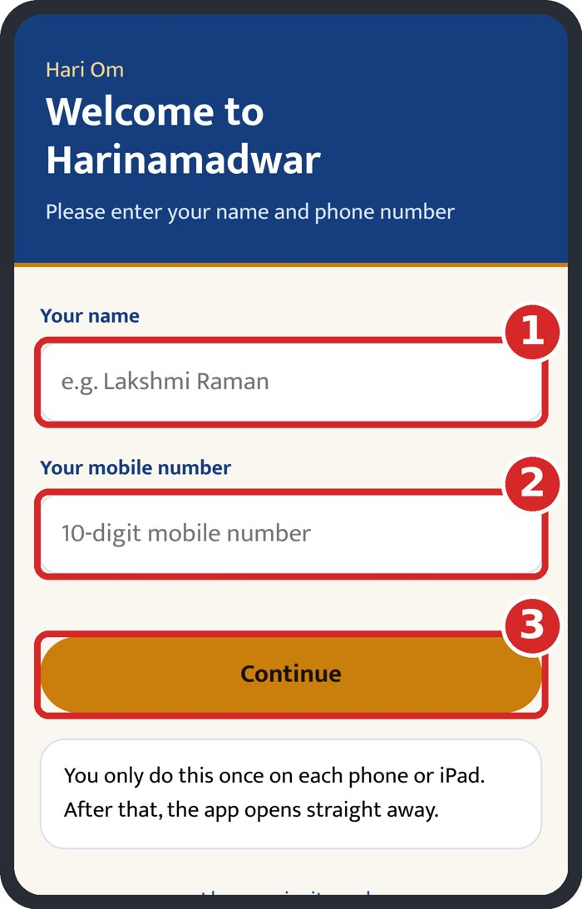
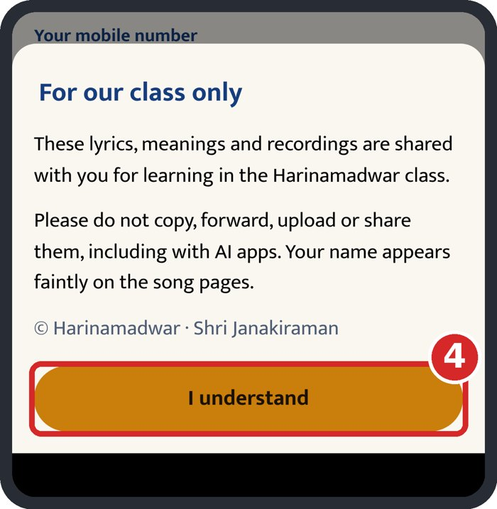
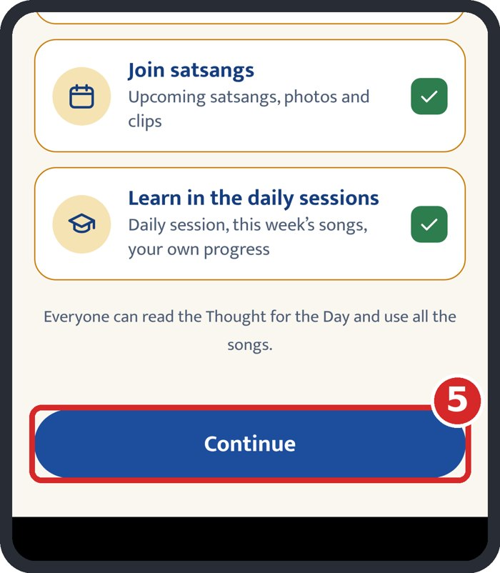
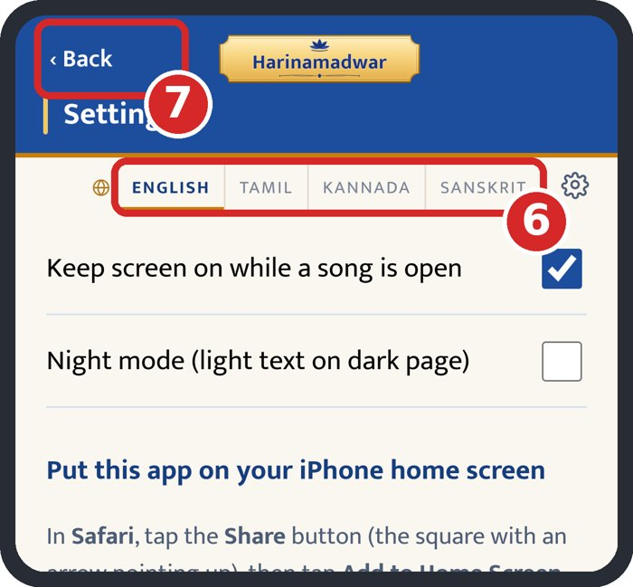
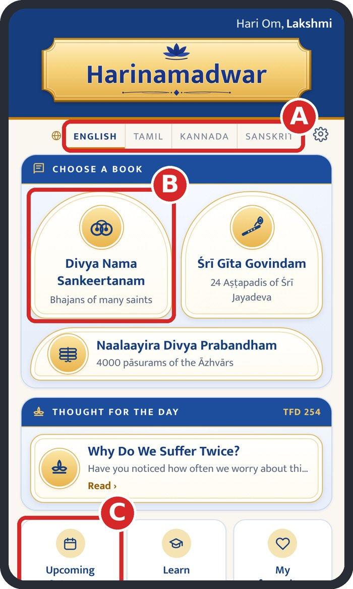
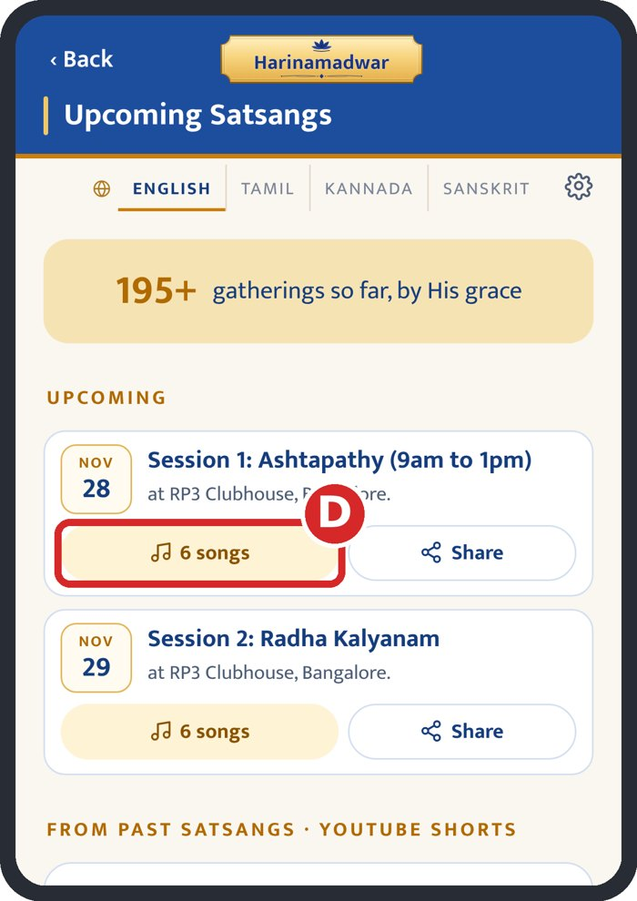
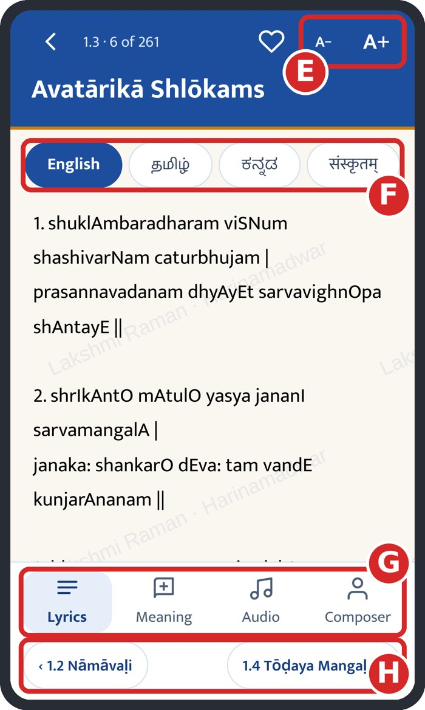
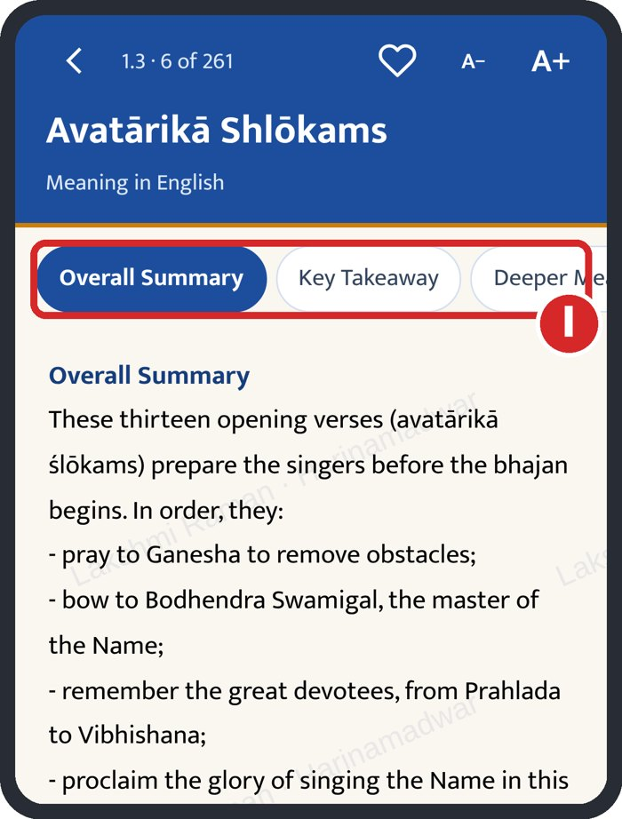
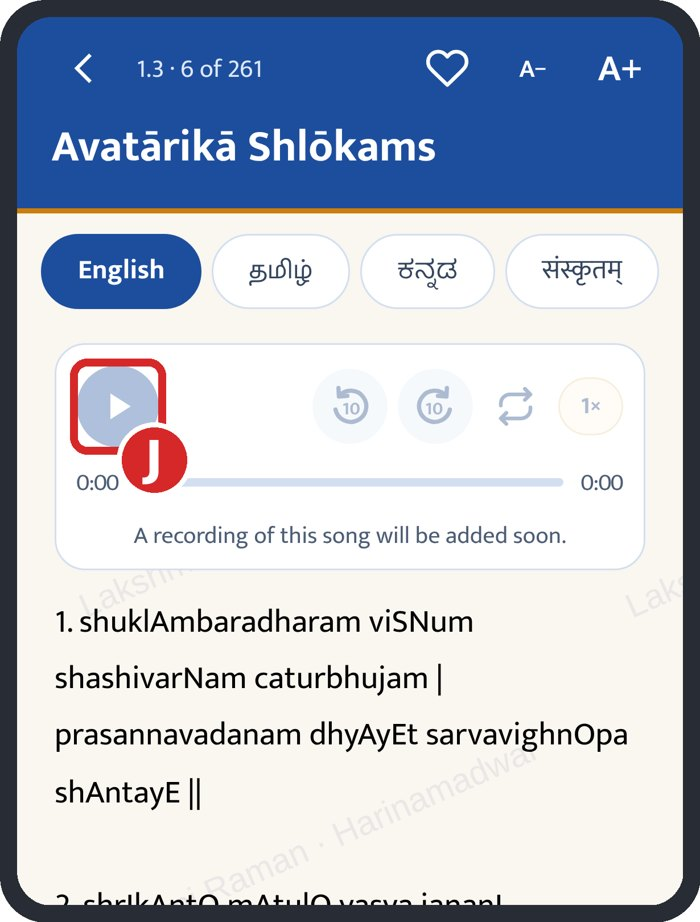

iPhone or iPad (use Safari – the blue compass app)
1
Tap the Harinamadwar link in the WhatsApp message. It opens in Safari.
If it opens in another app, copy the link and paste it into Safari.
You will see the sign-in page first. Don’t sign in yet – first put the icon on your home screen (next steps), then sign in from the icon.
2
Tap the Share button – a square with an arrow pointing up. It is at the bottom of the screen (on iPad: at the top).
3
A list slides up. Scroll down and tap Add to Home Screen (a square with a +).
4
Tap Add at the top right.
5
Go to your home screen and tap the new Harinamadwar icon. Always open the app from this icon.
If you don't see Add to Home Screen: make sure you are in Safari (not WhatsApp or Chrome), then try again.
Sign in (first time only)
1
Type your name.
2
Type your mobile number (10 digits).
3
Tap Continue. You need internet for this step.

4
Read the note and tap I understand. Your name will appear faintly on the song pages – this is normal.

5
Choose what you would like to see (you can leave them all ticked). Scroll down and tap Continue.

6
Choose your language for songs and meanings: English, Tamil, Kannada or Sanskrit.
7
Tap ‹ Back at the top left. You are in!

Using the app

ALanguage – change it here at any time.
BBooks – tap a book to see all its songs.
CUpcoming Satsangs – this weekend's sessions and their songs.

DTap songs under today's session to see the songs in the order we sing them.

EA− / A+ – make the words smaller or bigger.
FThe song in English, தமிழ், ಕನ್ನಡ or संस्कृतम्.
GLyrics · Meaning · Audio · Composer – tap to switch.
H‹ Previous and Next › song.

IIn Meaning, tap Overall Summary, Key Takeaway or Deeper Meaning to jump to that part.

JIn Audio, tap ▶ to listen (for songs that have a recording; this needs internet).
Need help?
• "Please type your 10-digit mobile number" – check the number has 10 digits. • Lost the icon, or asked to sign in again? Open the WhatsApp link again and sign in with the same name and number. • Anything else: ask any Harinamadwar volunteer at the satsang. 🙏